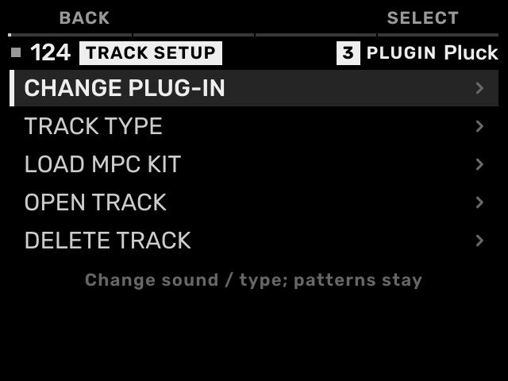
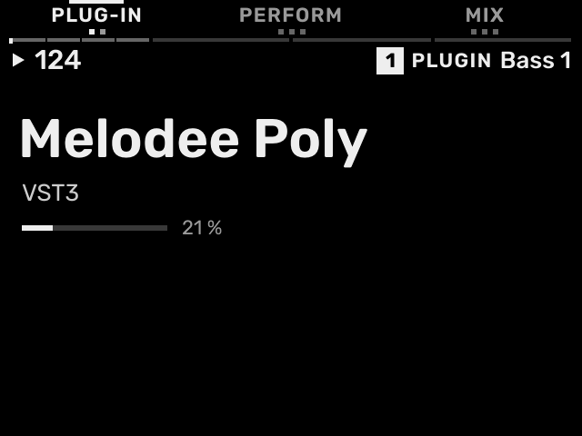
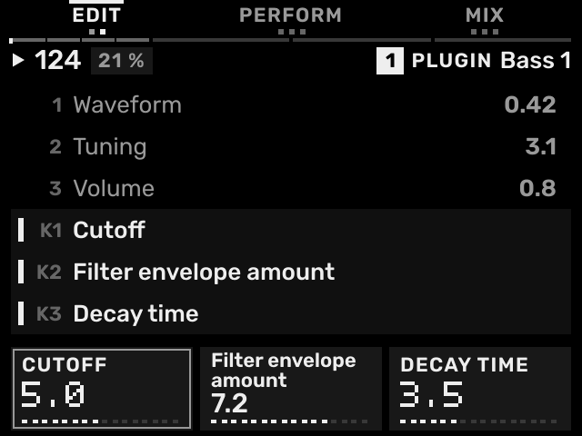
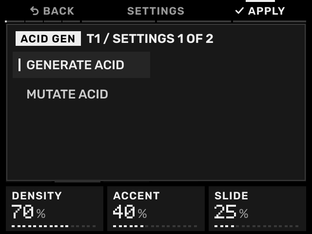
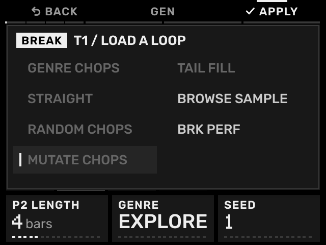

These instructions use the 0.2.0 controls. Check the selected track number and current button labels before each action.
RHYTHMER OS 0.2.0 — User manual
This manual describes RHYTHMER OS 0.2.0 for MPC Sample. Its foundation is Melodee Sample 0.3.0. The two version numbers refer to different projects. Instructions below use the labels in the 0.2.0 software; an earlier video may show different labels.
Start with Your first groove. Keep the button reference and track/system map open beside it.
1. Read these controls first
Push means press and release the large rotary encoder. Turn means rotate it. B1 / B2 / B3 are the three buttons above the screen, from left to right. K1 / K2 / K3 are the three knobs below it.
| Task | Controls | Result |
|---|---|---|
| Return or cancel | Hold SHIFT, push the encoder, then release SHIFT | Back one level. A confirmation is cancelled. It also works in MENU. |
| Open TRACKS | Press PAD FX + KNOB FX together | Select and mix tracks; B1 TRACK SETUP changes the selected track's instrument/type. |
| Select a track | Hold PAD BANK, tap pad 1–16, release PAD BANK | The header changes to that track. This does not record a note. |
| Play the selected instrument | Press SAMPLE | Pads play the selected instrument. |
| Choose patterns for one track | Press SEQ, then B1 until PATTERNS is shown | Pads choose patterns, not notes. |
| Launch sequences across tracks | Press SEQ, then B1 until SEQUENCES is shown | A sequence selects its numbered pattern on every track. |
| Open Step Edit | SHIFT + SEQ | Edit steps in the selected pattern. |
| Open GEN | PATTERNS → SHIFT + B3 | Open pattern generation. Check the target before applying. |
| Fine-adjust a value | Touch its K1–K3 knob, then SHIFT + encoder turn | Fine adjustment; this is not Back. |
| Undo / Redo | SHIFT + − / + | Undo/redo supported project edits. Not every plug-in knob has project Undo. |
| Save under a new name | SHIFT + Pad 16 → B1 SAVE AS | Name a project copy; B3 SAVE confirms its name. |
| Stop all current audio | Press STOP twice within 400 ms | Cut notes and effect tails. A new note or PLAY resumes sound. |
A single PAD BANK tap changes the pad bank. Holding it while selecting a track does not. If NOTE REPEAT or ARP is active, rate choices can temporarily replace soft-key menus. Turn the repeat/arp off before following a menu instruction.
2. Choose the screen for the task
| Screen | What the pads do | Use it for |
|---|---|---|
| SAMPLE sound screen | Play notes, kit sounds or sample chops | Audition, record notes, choose presets and edit sounds |
| TRACKS | Select tracks | Track level/pan/send A, TRACK SETUP and type changes |
| SEQUENCES | Launch one sequence across tracks | Change several tracks together |
| PATTERNS | Launch patterns on the selected track | Pick the pattern you will edit or generate |
| Step Edit / Roll | Edit steps or note events | Program or correct the selected pattern |
| BRK PERF | Play chops or performance commands, depending on its numbered page | Perform the Break Engine |
The header identifies the selected track. Check it before loading, editing or generating. Selecting track 2 does not automatically mean you are playing its notes: press SAMPLE to play its instrument. Older documents call this sound screen “Stage”.
If a pad changes a pattern number instead of playing a sound, you are on PATTERNS or holding SEQ. Release SEQ and press SAMPLE.
3. Start a project and add an instrument
A new project normally loads one of the MPC's factory kits on track 1. To start with an empty kit instead: SHIFT + Pad 16 → B3 NEW → B2 EMPTY on the confirmation. Do this only when you intend to start a new project.
To add a plug-in on a different track:
- Hold PAD BANK, tap an unused track pad, then release PAD BANK. Check the track number.
- If necessary press SAMPLE. An EMPTY track shows type cards.
- Turn the encoder to Plugin and push it.
- In the plug-in browser, turn to the engine name and push to load it.
- Wait for loading to finish. Press SAMPLE to play it.
The type cards are Drum / Keygroup / Plugin in Basic. MIDI / Audio are added in Full. To show Full: SHIFT + Pad 8 → Settings → K1 FEATURES = FULL on the main Settings page. Changing Basic/Full does not delete tracks or notes.
| Type | What it contains | What to load |
|---|---|---|
| Drum | A native sample kit with independently loaded pads | Samples, an MPC kit or input recording |
| Keygroup | One sample or multisampled instrument across the keys | WAV, SFZ, MPC keygroup program, EXS, SoundFont or DecentSampler instrument |
| Plugin | One plug-in instrument | An engine from the installed plug-in list; Rhythmer Kit is also here |
| MIDI, Full | Notes sent to external equipment | Choose an output port/channel; connect the external instrument's audio separately |
| Audio, Full | A recorded input take on the track's pattern | Configure INPUT, then record with SEQ RECORD + PLAY |
Drum and MIDI have a second source-selection step. B1 BACK / SHIFT + encoder push returns from sources to types, then to the previous track screen. An entirely empty project can return to TRACKS.
An intentionally empty Sample Kit is not the same as an EMPTY track. On its SOUND / TRIM page, encoder push opens TRACK TYPE if every pad/layer is empty. If other pads contain samples, push on the selected empty pad opens SAMPLES for that pad instead.
4. Replace an instrument or change track type

Start: select the target track, then press PAD FX + KNOB FX → B1 TRACK SETUP.
| Item | What it changes | What it keeps |
|---|---|---|
| CHANGE PLUG-IN | The selected track's plug-in | Patterns and track mix; confirm replacement when asked |
| LOAD SAMPLE on a sample track | The selected pad's sample | Other pads and the track's patterns |
| TRACK TYPE | Plugin / Sample Kit / Keygroup / Empty; Full also offers MIDI / Audio | All 128 patterns, selected pattern and track mix; type-specific sound state is replaced |
| LOAD MPC KIT | The kit from a project/program | Destination patterns; it does not open the whole source project |
| DELETE TRACK | Sound and patterns | This is a separate confirmed deletion; Undo can restore it |
You can also open an instrument's preset list and press B2 PLUG-INS, or press SAMPLE SELECT on its plug-in track. These enter the instrument browser. Effect preset lists do not replace track instruments.
Back before confirming keeps the current instrument. Recording and frozen tracks have additional protections: finish the recording, or answer the thaw/unfreeze prompt before replacing them. Selecting another track from an instrument-owned browser closes that browser and opens the new track's sound screen. Bus/master effect screens remain shared.
5. Find and load presets

- Select the plug-in track and press SAMPLE.
- Press B1 until its PRESETS page is selected. The engine and current preset name are shown.
- Turn the encoder to step through presets from the main page. Push it to open the full list.
- In the list, turn to an item, then push / B3 LOAD to load it. Moving the list cursor alone does not load it.
- Use B1 BACK or SHIFT + encoder push to return. B1 moves up a preset folder before leaving it.
Encoder and −/+ navigation wrap from the last preset to the first, and back. This applies inside the current preset folder; User Sound / User Kit entries participate in the list. Loading a factory preset can replace your unsaved sound edits. Save a User Sound/Kit first if you want to keep them.
A normal instrument plays one sound across pitches. It does not assign a different factory preset to every pad. Use Rhythmer Kit when you want sixteen different sounds on one track.
6. Edit the sound, then save a reusable preset

On a plug-in sound screen, B1 cycles PRESETS / EDIT. Press it until EDIT is selected.
- Turn the encoder to move through rows of up to three controls. The visible names identify the current row.
- Turn K1 / K2 / K3 to edit the corresponding visible values.
- To fine-adjust, touch that knob first and hold SHIFT while turning the encoder.
- ENV/LFO/FX controls appear when the original engine provides them. They are sound controls, not a requirement to add a separate project modulator.
- The PRESETS main filter and its matching EDIT control are linked. They do not create a second filter.
If you see Save Slot / Save Sound or Save Kit / Status, you are in the save tool, not a sound-design row. Press SHIFT + encoder push to return to the sound editor.
To save a User Sound:
- From the sound screen's EDIT, push the encoder to open its tools.
- Select SAVE if it is not already open.
- Set K1 to a slot, turn K2 SAVE SOUND, and wait for K3 STATUS = READY.
- Return to PRESETS, open the list, select the saved User Sound and push / LOAD to reload it.
The same slot is overwritten. User presets save instrument settings, not the song's notes or original sample files. Save the project separately and keep source samples on the card.
7. Use Rhythmer Kit
Load Rhythmer Kit from the top of the plug-in list. It has 36 complete factory kits, with pads 1–16 filled. Start with bank A.
| Task | Procedure | Check |
|---|---|---|
| Change the whole kit | PRESETS → choose another kit | Multiple pad sounds change |
| Change one pad's source | Sound screen EDIT → encoder push → PAD SOURCE; hit the pad, then K2 ENGINE / K3 SOUND | The selected P number and engine/sound name match the pad |
| Change one pad's volume | Return to the sound screen's EDIT; hit the pad; use the first row's K1 Pxx Volume | Only that pad's level changes |
| Shape the whole kit | PRESETS KIT CUTOFF / KIT RESONANCE | All pads pass through the same whole-kit filter |
| Save the whole kit | Tools → B3 SAVE → K1 slot → K2 SAVE KIT → STATUS READY | User Kit appears in KIT PRESETS |
The tool's B3 cycles PAD SOURCE → SAVE → EDIT. Its B2 KIT PRESETS opens the preset list. SHIFT + encoder push returns to the original sound-editor position.
KIT … means a whole-kit control. P01 … / P11 … means that selected pad's control. Hit a different pad to edit it. A pad's engine can also have its own filter. This is separate from the whole-kit filter. Do not expect the KIT CUTOFF value to change when selecting another pad.
8. Load samples or an MPC kit
Load a file onto one pad
- Select a Drum / Sample Kit track. Press SAMPLE and hit the destination pad.
- Press SAMPLE SELECT. Check the destination track/pad in the browser header.
- Use the encoder to choose folders/files. B2 CARD / INTERNAL switches storage. B3 PREVIEW auditions files as you select them.
- Push on a file to load it onto that pad. Wait for loading to finish.
- Press SAMPLE, then hit the pad to check it. Other pads remain as they were.
WAV, MP3, FLAC, Ogg Vorbis and AIFF are supported. A long file may be streamed or cached; allow preparation to finish. An empty selected pad also opens this browser with encoder push on SOUND/TRIM when another pad already contains a sample.
Load only a kit from another MPC project
Select the destination track, open TRACKS → B1 TRACK SETUP → LOAD MPC KIT and choose the project/program. Use B2 to choose card/internal storage when offered. This loads its kit onto the selected track; opening a project from the Project OPEN screen is a different action and replaces the current project.
On the native sample track, press B1/B2/B3 repeatedly until the required caption appears: SOUND, TRIM, TUNE, AMP ENV, PLAY, MIX, FILTER and FILT ENV are available in Basic. Full adds layers, colour, sends, follow, cloud and kit-filter pages. A direct Trim shortcut can enter TRIM instead of SOUND.
9. Record and play patterns
A track's pattern stores its notes and supported motion. A sequence launches its numbered pattern across tracks. Track 1 pattern 1 and track 2 pattern 1 are different patterns.
- Select the track. Press SEQ, then B1 PATTERNS.
- Select the pattern pad you want to use. Bank A pad 1 is pattern 1.
- Set K1 LENGTH, K2 Q and K3 SWING on the pattern settings row. Start with 4 bars, 1/16 and 50%.
- Press SAMPLE to return to note-playing pads.
- Press SEQ RECORD, then PLAY. Play the pads after any count-in.
- Press SEQ RECORD again to stop recording while playback continues. Press STOP to stop playback.
If pads switch patterns, return to SAMPLE before recording. If you hear no click, use TAP TEMPO's click controls; you can also enable the count-in with SHIFT + Pad 4. Use SHIFT + SEQ for Step Edit, or the sequence editor's Roll page to correct notes. Read the editor's current header to confirm the track and pattern.
On SEQUENCES, pad 1 launches pattern 1 on all tracks. A track with no notes in that sequence is silent. Use PATTERNS when you want to change just one track. Full exposes Motion/Mod/Macro; B3 cycles them and SHIFT + B3 ADD adds a supported target. A plug-in's internal LFO and the project's MOD page are different systems.
10. Generate notes without losing the wrong track
Entry: select the target track → SEQ → B1 PATTERNS → SHIFT + B3 GEN.
| Operation | Result | Instruments |
|---|---|---|
| GENERATE SONG | Generate the selected 4-track group | SOUND + MIDI assigns a kit to its first track and instruments to the next three |
| MUTATE SONG | Vary that group's current patterns | Existing instruments stay |
| GENERATE Tn / MUTATE Tn | Work on the selected track only | Its instrument stays |
| GENERATE MIDI / MUTATE MIDI | Work on the range in GEN SETUP | MIDI ONLY keeps the instruments |
| ACID GEN / BREAK GEN | Open engine-specific generation | Shown only for the matching track |
For four-track generation, open GEN SETUP, set K3 GEN MODE = SOUND + MIDI, choose K1 SONG GROUP = 1–4 / 5–8 / 9–12 / 13–16, and confirm. This can change that group's instruments and patterns. Use an unused group if you want to keep an existing part.
For one track or a range without instrument replacement, choose MIDI ONLY in GEN SETUP and set MIDI FROM / TO. Identical start/end track numbers target one track. A GENERATE Tn command is also a direct one-track action.
Back returns sub-generator → GEN main → PATTERNS. Applying generation remains in the generator so you can compare another result. SHIFT + − undoes a supported generation operation. General GEN exposes Seed; Acid GEN does not.
11. Use Acid GEN

- Load Acid Engine on the selected track and choose a preset, for example SQUELCH or Acid Squelch.
- Open SEQ → B1 PATTERNS → SHIFT + B3 GEN → ACID GEN.
- On SETTINGS 1 OF 2, K1 DENSITY changes note density, K2 ACCENT the accented-note amount, K3 SLIDE the slide amount.
- Press B2 SETTINGS for 2 OF 2: OCTAVES, BASE OCTAVE and AUTO MUTATE. Keep AUTO MUTATE off for the first test.
- Select GENERATE ACID, then push / B3 APPLY. Press PLAY to hear it.
- Use MUTATE ACID to vary the current line. Back returns to GEN; another Back returns to PATTERNS.
The project key/scale is used. Seed is managed internally; there is no SEED knob or REPLAY SEED item. AUTO MUTATE changes the line at the chosen bar interval during supported pattern playback; it is disabled during recording and song playback. Turn it off when you want a repeatable recorded part.
12. Load a Break and return to its controls

Use a loop that you own or can use. Know its actual length in bars; this guide starts with 2 bars.
- Select an unused track → Plugin → Break Engine.
- In the browser, check LOAD A and set K1 LOAD BARS = 2 for the two-bar loop. Select its WAV and push.
- Wait for preparation. The BREAK GEN menu stays open. A previously empty pattern receives a straight pattern; an occupied pattern is preserved.
- Press PLAY. If the bar count is correct, the loop should follow project tempo. If it runs at half/double the intended speed, check the source bar count before generating more patterns.
- Choose BRK PERF for performance pages. To reopen the generator later: select the Break track → SEQ → B1 PATTERNS → SHIFT + B3 GEN → BREAK GEN.
Selecting Break Engine is not the same as loading its source audio: the change is committed after successful file loading. B1 CANCEL / SHIFT + push while loading cancels assignment. A later completed decode must not replace another selected track.
For a new rhythm, select Straight / Genre / Random / Mutate / Tail Fill in BREAK GEN and apply it. These change notes/chop order in the pattern. They do not by themselves enable LOOP variation or a STRETCH performance command.
BRK PERF: what each page does
Turn the encoder to move through the six numbered pages. The caption shows your position.
| Page | Action to try | What must be true / expected result |
|---|---|---|
| 1 CHOPS | Hit pads 1–16 | Play the loop's sixteen slices. B2 LOAD A browses source A. |
| 2 ROLLS / HOLD PADS | Hold a repeat pad while the pattern plays; release it | Hear the held command; releasing ends it. Pad 3 is STRETCH. |
| 3 SOURCE A / B | B2 LOAD B, then choose B; pad 1 selects A, pad 2 selects B | B must be loaded first. Pad 3 / RETURN restores straight playback. |
| 4 LOOP VARIATIONS | Set SOURCE's PLAY MODE to LOOP; set PATTERN HOLD off; raise Variation or Drift | These variations act in LOOP playback. They do not vary ordinary CHOP playback. |
| 5 GRAIN / STRETCH | Hold pad 3 on page 2, keep it held and turn the encoder to page 5 | Adjust grain processing while STRETCH is active. Merely turning these knobs does not start STRETCH. |
| 6 TRACK MIX | Adjust level, pan and send A | Mix the Break track; these are not source-bar or chop controls. |
PATTERN HOLD stops internal LOOP-pattern regeneration. It is not audio freeze, a sustained-note switch or the switch for Grain. If the status says INACTIVE, WAITING or READY, read its condition before expecting a change. Page 5 needs STRETCH; page 4 needs LOOP, playback and Hold off.
Load A and Load B are different actions. On source B changes, the bar structure must match the prepared loop. Replacing A with a different length asks for confirmation; Back cancels it. Use Undo/Redo to compare a completed source replacement. Keep the audio files on the card when saving the project.
13. Mix and identify the filter/effect you are changing
| Control | Scope | Where |
|---|---|---|
| Main engine CUTOFF / RESONANCE | The loaded instrument; whole kit for Rhythmer Kit | Plug-in PRESETS; linked to the corresponding EDIT controls |
| Pxx controls | One Rhythmer Kit pad | Sound EDIT after selecting the pad |
| Native sample FILTER | One sample pad | Sample track B3 FILTER |
| Native sample KIT FILT / SOUND filter | All pads of that native sample kit | Its SOUND / KIT FILT pages |
| DJ FILTER / ECHO / SPACE | Separate OS performance processing on the track | Plug-in B2 PERFORM |
| SEND A–D | Sends to shared buses | TRACKS and Full SENDS / FX pages |
| Engine FX / track inserts / bus FX | Different processing stages | Engine EDIT or the appropriate FX chain |
ECHO is not simply SEND A and SPACE is not simply SEND B. If effects sound excessive, reduce PERFORM ECHO/SPACE and track sends, then check the engine's own FX and inserts. Turning an effect input down does not erase an existing tail; double STOP cuts current audio.
TRACKS uses K1 LEVEL / K2 PAN / K3 SEND A. The default black-and-white screen keeps colour names/metadata for kits without requiring colour to identify the selected track or pad.
14. Save, reopen and back up
The project autosaves about three seconds after the last control while playback, recording and printing are stopped. The Project page shows SAVED / UNSAVED. Stop and let saving finish before power-off or card removal.
To keep a named copy: SHIFT + Pad 16 → B1 SAVE AS → enter name → B3 SAVE. An imported MPC project needs SAVE AS before it is written in RHYTHMER's own project format. To reopen: Project → B2 OPEN → choose the project → push.
| Save | Contains | Does not replace |
|---|---|---|
| Project | Tracks, patterns, mix, supported modulation and instrument state | Backup of source audio / SD card |
| User Sound | The edited instrument sound | Project notes/arrangement |
| User Kit | Kit-wide and pad sound settings | Source sample backup or the project |
Back up Rhythmer, Samples and other original sample folders, plus the rest of your card when practical. Do not delete source files just because a project or User Kit has been saved.
15. Further tasks
These are separate tasks; do not use them as prerequisites for a first pattern.
| Goal | Entry and first action |
|---|---|
| Record input audio | In Full, choose Audio on an empty track, configure INPUT, then SEQ RECORD + PLAY for a pattern-length take |
| Auto-sample a plug-in or external MIDI instrument | On that Plugin/MIDI track outside Song, SHIFT + Pad 11 opens AUTO SAMPLE; allow its check to finish, set the key/note/sound rows with B2, then B3 SAMPLE |
| Separate a sample into stems | Native kit TRIM → SHIFT + B3 STEMS, or hold encoder → HERE → STEMS; use a source pad with four empty pads after it; completion places the parts as one undoable operation |
| Freeze a track | In Full, hold encoder → HERE → FREEZE; inspect the print options before starting. Deep freeze unloads the plug-in until thawed |
| Export MPC 3 | Song → B1 EXPORT → MPC 3. Export omits effects/sends/song tempo changes and non-WAV source samples; check it in MPC software |
| Use the USB web page | Connect USB-C networking and open rhythmer.local; its Files/guide/update pages are separate from audio plug-in editing |
| Mirror the screen over USB | Settings → SCREEN; enable screen mirror and choose MPC Sample as a camera in a camera application |
MIDI clock display is stabilised, but the clock-following algorithm is unchanged. For the first tutorial, disconnect external MIDI clock so you can set tempo locally.
16. When the result is not what you expected
| Symptom | Check first | Next action |
|---|---|---|
| Pads change patterns, not sounds | Screen says PATTERNS / SEQUENCES, or SEQ is held | Release SEQ; press SAMPLE |
| No plug-ins listed | Installation and card folder | Use the full SD ZIP; plug-ins belong in Rhythmer/Plugins |
| Loaded a different track, but an old browser was visible | Header's selected track | Select the track again and press SAMPLE; instrument-owned browsers should follow the new track |
| Expected sound controls but see SLOT / SAVE / STATUS | Save tools are open | SHIFT + encoder push to return to sound EDIT |
| Kit knob changes the wrong sound | Selected P number | Hit the intended pad; check its Pxx label before turning the knob |
| Sound is quiet or silent | Track/pad level, main filter, mute and outputs | Try a known factory preset; open cutoff; check native/engine effects and MIDI input/port |
| Sound continues after STOP | Sustained notes/effect tails | Double STOP within 400 ms |
| TRACK SETUP is replaced by rate buttons | NOTE REPEAT / ARP | Turn that feature off; return to TRACKS |
| Break is half/double speed | LOAD BARS | Reload using the source's actual bar count |
| LOOP variation or Grain does nothing | CHOP vs LOOP; Hold; STRETCH status | Use the conditions in the six-page table above |
| Save says error or a User preset is missing | Card space/write access; STATUS | Fix storage and save again. Do not assume the preset exists until READY |
Credits and testing status
RHYTHMER OS is developed by jazzy rhythmer and built on Melodee by Kerem Kiliç (Ellic Studio), sample-base and the credited engine projects. Original licences and notices accompany the installation. This is an early beta. Software checks are distinct from physical-device installation, listening, timing, USB and long-session testing.